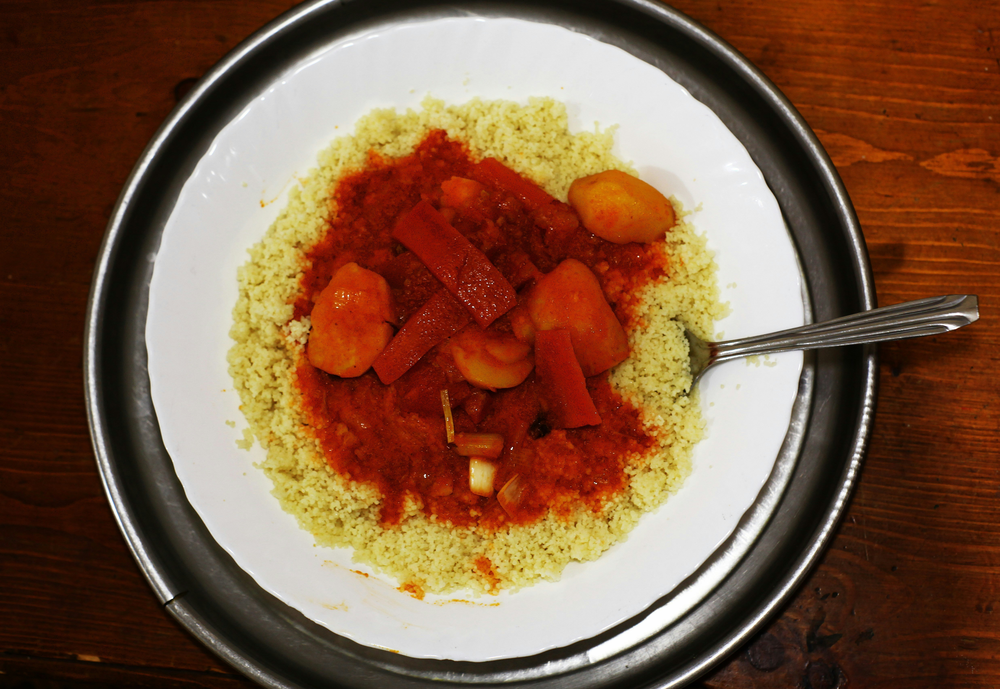
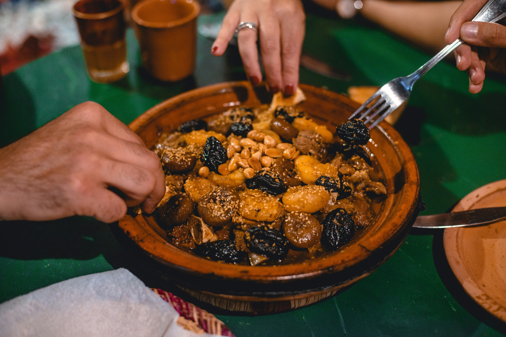
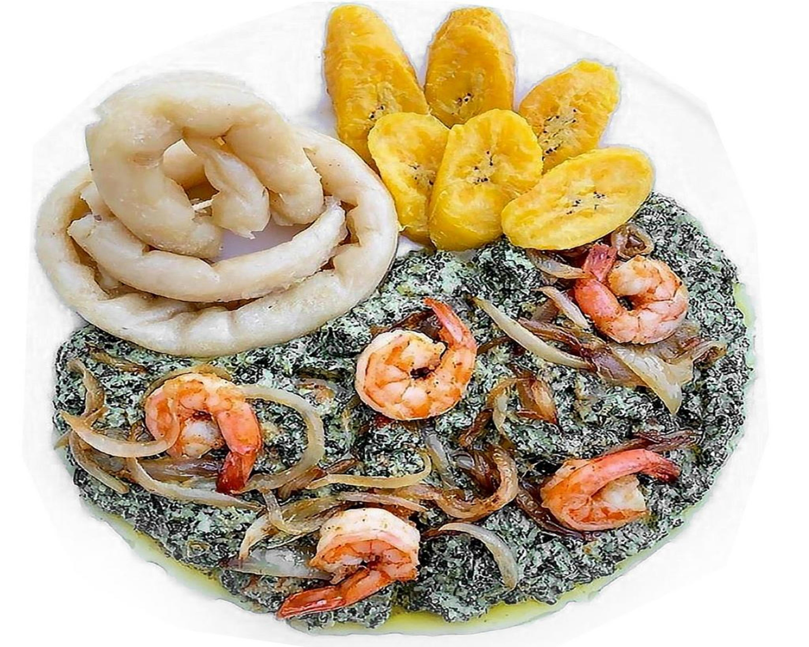
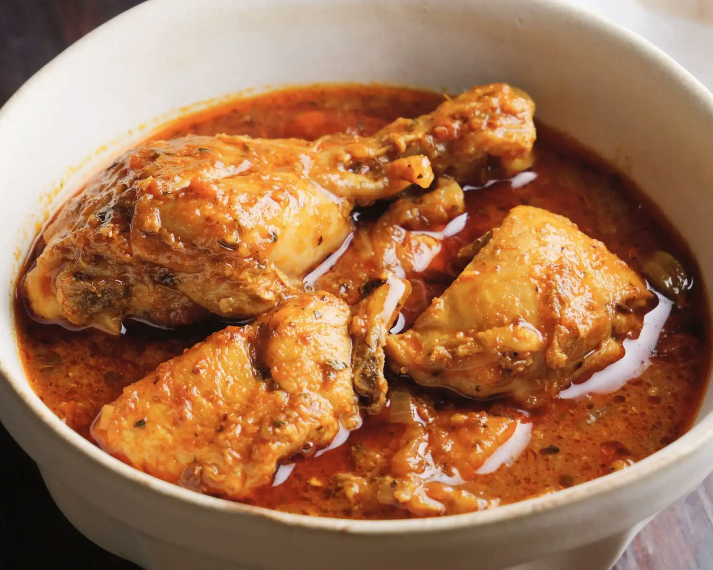
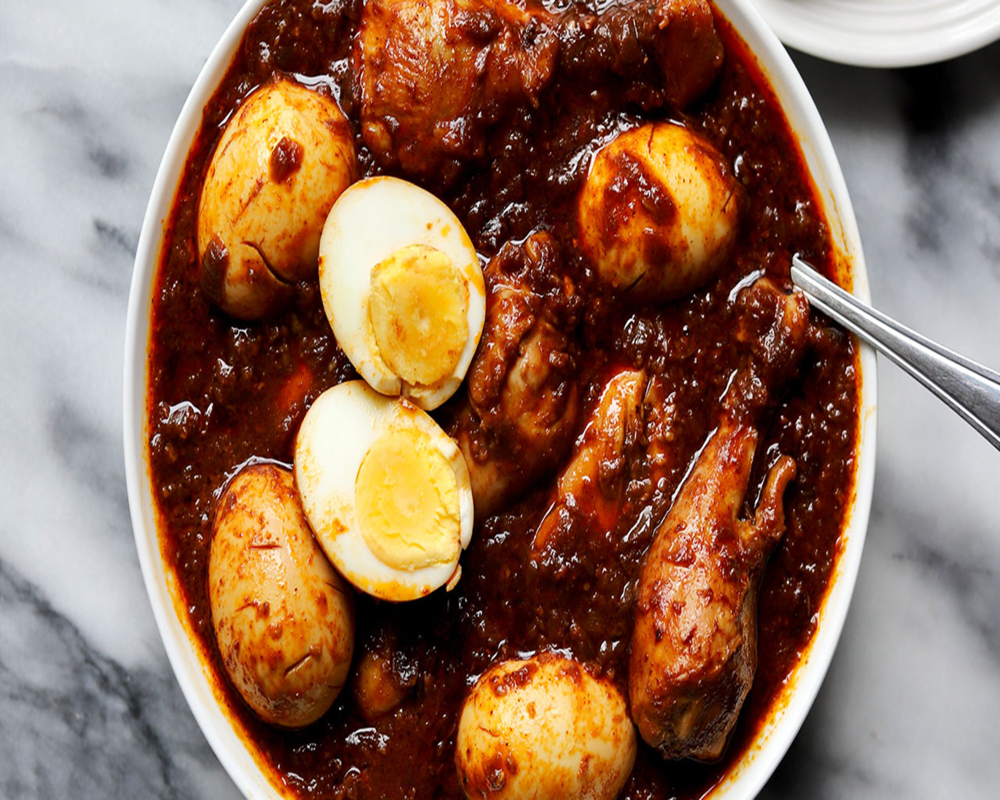
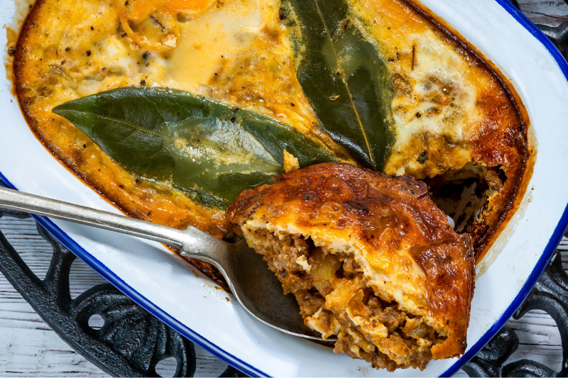
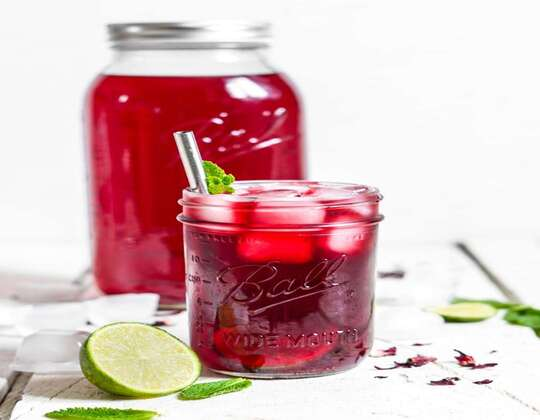
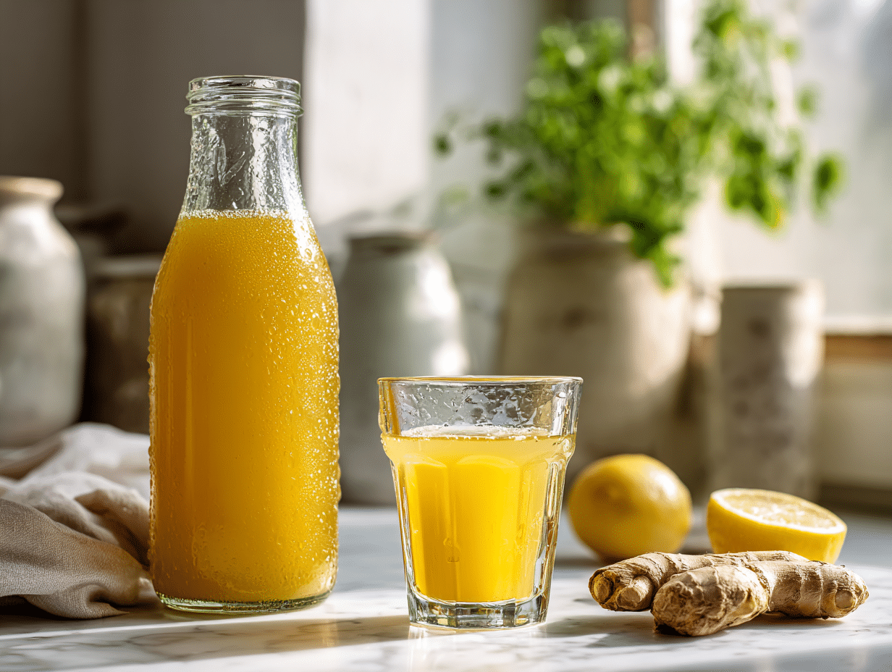

Couscous 😋 Tunisie
Plat emblématique du Maghreb, servi lors des mariages, fêtes religieuses et grandes réunions familiales. Symbole de partage et d’hospitalité.


Plat emblématique du Maghreb, servi lors des mariages, fêtes religieuses et grandes réunions familiales. Symbole de partage et d’hospitalité.

Ragoût lentement mijoté, incarnation de la générosité marocaine lors des repas familiaux et cérémonies.

Incontournable des fêtes et célébrations, symbole de convivialité et de fierté culturelle.

Plat national partagé dans un grand bol, représentant la teranga sénégalaise (hospitalité).

Plat de cérémonie, symbole d’abondance et d’unité familiale.

Préparé lors des grands événements familiaux, marque de respect et de partage.

Plat de fête et de célébration, cœur de la cuisine angolaise.

Plat royal servi lors des mariages et fêtes religieuses.

Plat du quotidien mais aussi des cérémonies, symbole de simplicité et solidarité.

Plat métissé, aujourd’hui servi lors des grandes occasions officielles.
12h00 – 14h30 : service du midi
19h00 – 22h30 : service du soir
12h00 – 15h00 : brunch africain
Fermé le soir

Boisson traditionnelle d’Afrique de l’Ouest, préparée à base de fleurs d’hibiscus, légèrement sucrée et rafraîchissante.

Boisson énergisante et naturelle, très appréciée pour son goût intense et ses bienfaits digestifs.
Mariages, anniversaires, repas de famille ou événements privés, Afrik Food vous accompagne avec une cuisine africaine généreuse et authentique.
📍 Sur place ou à emporter
📞 Contactez-nous pour un devis personnalisé
Cheffe & âme culinaire d’Afrik Food